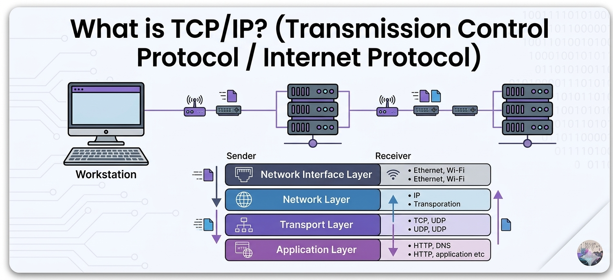

TCP/IP (Transmission Control Protocol/Internet Protocol) is the fundamental communication language of the Internet. It is actually a suite of protocols, but the two most important are:
IP is like writing a street address on an envelope (delivery is attempted but not guaranteed). TCP is like calling the recipient to confirm every page of a book arrived, and if page 3 is missing, asking them to resend it.
TCP/IP is the standard protocol suite for the Internet and most private networks. It allows different types of computers and networks to communicate with each other, making it the backbone of modern digital communication.
It's role is to enable reliable, end to end communication between any two devices on a heterogeneous global network, regardless of underlying hardware.